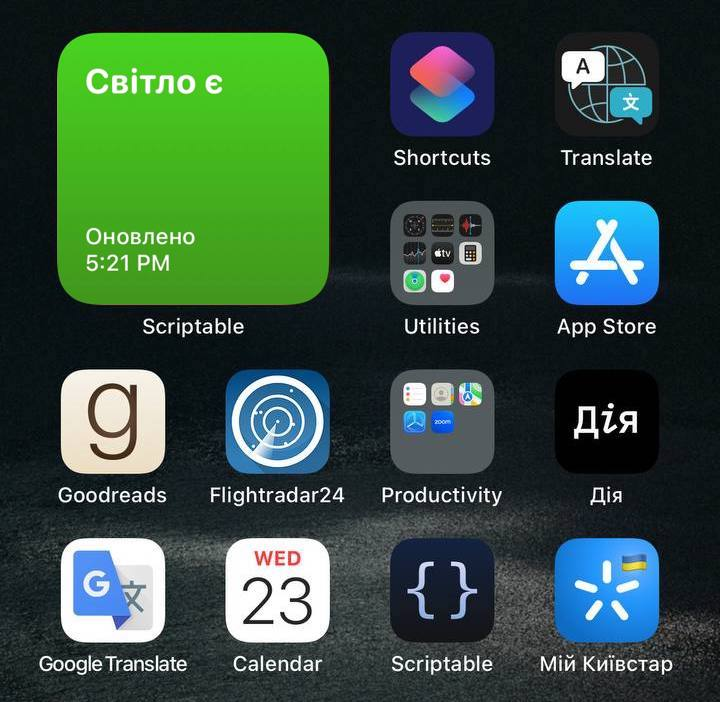
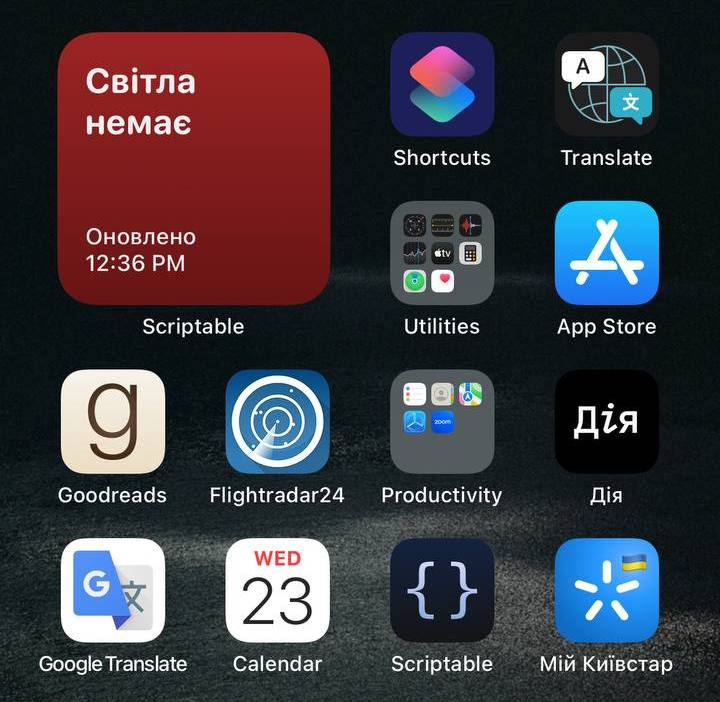

Десь так виглядає


Як встановити
Крок 1
Встановлюємо додаток Scriptable: https://scriptable.app/

Крок 2
Завантажуємо код віджета Lights-zl34.scriptable і відкриваємо його в Scriptable
Крок 3
Додаємо віджет на домашній екран
Відео-інструкція
Готово!
Якщо шо, пишіть
Known issues
Віджет автоматично оновлюється кожні 15-20 хвилин, тобто далеко не в реальному часі
Базовано: https://vadymklymenko.com/blog/shutdown-ios-widget/